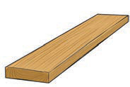
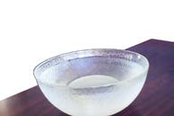
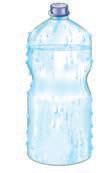

| Picha | Inaruhusu mwanga (Angavu) | Hairuhusu mwanga (Kinzanuru) | Inaruhusu mwanga kiasi (Nusuangavu) |
|---|---|---|---|
 Maelezo ya picha: Kipande cha ubao wa kahawia.Kipande cha ubao | |||
Maelezo ya picha: Dirisha la kioo lenye fremu nyeusi ukutani.Dirisha la kioo | |||
 Maelezo ya picha: Bakuli la kioo juu ya meza.Bakuli la kioo | |||
 Maelezo ya picha: Chupa ya plastiki yenye ukungu wa rangi ya buluu hafifu.Chupa yenye ukungu | |||
 Maelezo ya picha: Sufuria nyeusi yenye vipini viwili.Sufuria Maelezo ya picha: Sufuria nyeusi yenye vipini viwili.Sufuria | |||
Maelezo ya picha: Kioo cha mbele cha gari.Kioo cha mbele cha gari |